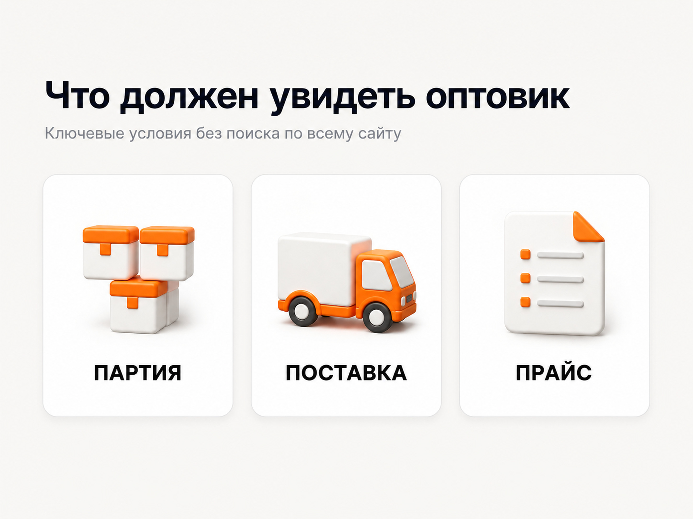
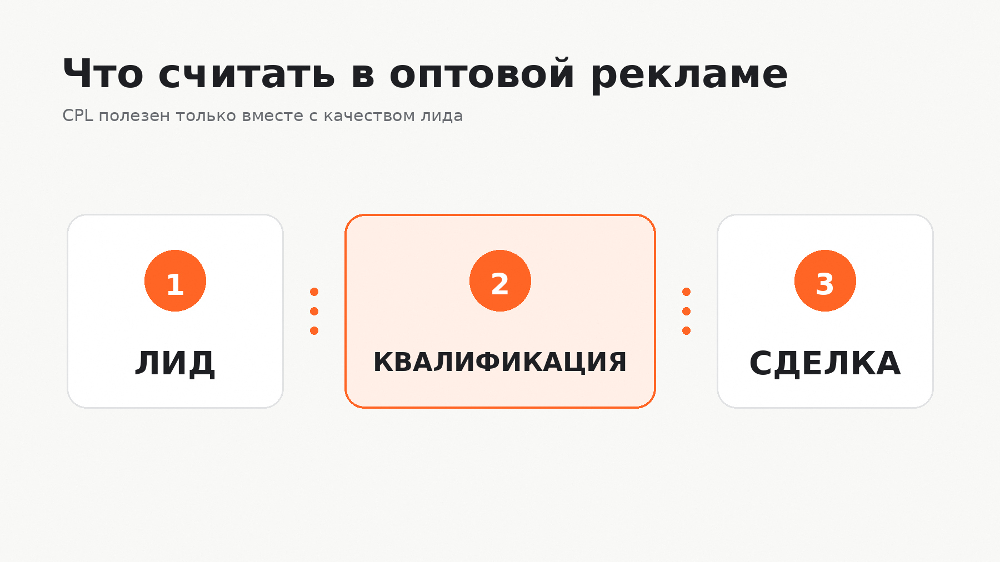

Блог о платном трафике
Реклама оптовой компании: как привлекать B2B-клиентов
Реклама оптовой компании должна приводить не максимальное количество заявок, а подходящих покупателей: магазины, дилеров, дистрибьюторов, закупщиков, предпринимателей и компании, которым нужен товар партиями. Главная сложность здесь в том, что один и тот же товар часто ищут и оптовики, и розничные покупатели.
Поэтому я строю продвижение оптового бизнеса вокруг трех задач: отделить B2B-спрос от розницы, показать условия поставки еще до заявки и связать рекламу с реальными продажами. Если этого не сделать, можно получить хороший CTR и недорогие обращения, но перегрузить отдел продаж нецелевыми запросами.

Чем реклама оптовой компании отличается от розничной
В рознице пользователь часто принимает решение быстро: увидел товар, сравнил цену, оформил заказ. В опте путь длиннее. Клиенту нужно понять, подходит ли поставщик по ассортименту, минимальной партии, срокам, региону доставки, документам и условиям сотрудничества.
Из-за этого у оптовой рекламы есть несколько особенностей:
- поисковый спрос обычно уже и точнее;
- часть запросов пересекается с розницей;
- решение может принимать не один человек;
- между первым кликом и оплатой проходит больше времени;
- одна крупная сделка может быть ценнее десятков небольших обращений;
- качество заявки важнее ее формальной стоимости.
Поэтому отчет вида «получили 100 лидов по 700 рублей» почти ничего не говорит без ответа на вопрос: сколько из них были реальными оптовыми покупателями и сколько дошли до заказа.
Сначала нужно разделить оптовый спрос
Одна из самых частых ошибок - рекламировать весь ассортимент одинаково. Внутри одной оптовой компании могут быть совершенно разные группы спроса.
Например:
- Покупатели, которые ищут конкретный товар оптом.
- Магазины и дилеры, которые ищут нового поставщика.
- Компании, которым нужна регулярная поставка.
- Клиенты, которым важен определенный объем партии.
- Закупщики, ищущие производителя напрямую.
- Предприниматели, которые сравнивают условия нескольких поставщиков.
Для этих сегментов могут отличаться запросы, объявления, посадочные страницы и допустимая стоимость привлечения.
Если компания продает и оптом, и в розницу, я бы не смешивал эти направления в одной рекламной логике. Оптовику нужно сразу показать условия для бизнеса, а розничному покупателю они будут только мешать.
Какие каналы подходят для рекламы оптовой компании
Поиск Яндекса
Поиск хорошо работает со сформированным спросом. Пользователь уже знает, что ему нужно, и вводит запросы вроде «кофе оптом», «поставщик упаковки», «детская одежда оптом», «купить продукт партиями» или запрос с конкретной характеристикой товара.
Для оптовой компании особенно полезны формулировки, которые показывают коммерческий B2B-интент:
- оптом;
- поставщик;
- от производителя;
- для магазина;
- для бизнеса;
- дилер;
- дистрибьютор;
- партия;
- прайс;
- коммерческое предложение.
При этом нельзя просто добавить слово «оптом» ко всей семантике. Часть целевых клиентов ищет товар без явного указания формата закупки, а часть запросов со словом «опт» все равно может приводить слабый трафик. После запуска нужно регулярно смотреть реальные поисковые фразы и исключать розничные, информационные и случайные запросы.
Рекламе производственной компании
РСЯ
Рекламная сеть Яндекса полезна, когда прямого поискового спроса мало или его не хватает для нужного объема заявок. В опте человек может не искать поставщика прямо сейчас, но уже работать в нужной отрасли, посещать сайты конкурентов, изучать ассортимент или возвращаться к вопросу закупки через несколько дней.
РСЯ имеет смысл тестировать отдельно от поиска и оценивать по качеству заявок. Дешевый лид из сетей не является хорошим результатом, если менеджеры почти все обращения признают розничными или нецелевыми.
SEO и контент
Для оптовой компании SEO особенно полезно при широком ассортименте. Пользователи могут искать товары по назначению, материалу, бренду, фасовке, объему партии, отрасли применения или условиям поставки.
Сайт можно постепенно расширять под реальные группы спроса: категории каталога, страницы производителей, условия сотрудничества, отраслевые решения, ответы на вопросы закупщиков и кейсы.
Контекстная реклама при этом дает полезные данные для SEO. По реальным поисковым фразам и качеству заявок видно, какие направления действительно приводят покупателей, а какие дают только посещаемость.
Как я настраиваю Яндекс Директ для оптовых продаж
1. Отделяю опт от розницы еще в объявлении
Если минимальная партия имеет значение, ее лучше обозначить заранее. То же касается работы только с юридическими лицами, конкретной географии, минимальной суммы заказа или других жестких ограничений.
Задача объявления - не получить любой клик, а отсеять пользователя, который заведомо не подходит.
2. Разделяю товарные направления
Если ассортимент большой, не стоит автоматически объединять все категории в одну кампанию. У разных товаров могут быть разная маржа, сезонность, аудитория и экономика заявки.
Например, для одной группы товара допустима дорогая заявка из-за высокого среднего заказа, а для другой такая же стоимость обращения уже делает рекламу нерентабельной.
3. Веду трафик на страницу с условиями для оптовика
Пользователь не должен искать по сайту ответ на вопрос, работает ли компания вообще с оптовыми клиентами.

На посадочной странице я бы вынес достаточно высоко:
- что продается и для кого;
- минимальную партию или сумму заказа;
- географию поставок;
- наличие товара или принцип формирования заказа;
- сроки отгрузки;
- способы доставки;
- сертификаты и документы, если они важны;
- фотографии товара, склада или производства;
- условия для дилеров и постоянных клиентов;
- понятную кнопку запроса прайса или коммерческого предложения.
Если цены зависят от объема, необязательно публиковать полный прайс. Но человек должен понимать принцип работы и следующий шаг.
4. Настраиваю аналитику до запуска
Для оптового бизнеса мало считать отправки формы. Минимально нужно видеть:
- звонки;
- формы;
- обращения в мессенджеры;
- запросы прайса;
- запросы коммерческого предложения;
- квалифицированные заявки;
- сделки.
Если цикл продажи длинный, рекламу желательно связывать с CRM. Тогда можно отделять обычный лид от квалифицированного и оценивать кампании по тому, что происходит после первого обращения.
Официальные материалы Яндекса по аналитике оптовых продаж также рекомендуют смотреть не только на CPL, но и на долю оптовых заявок, конверсию в сделку и прибыльность направления.
Какие показатели считать основными
Для оптовой компании я бы не ставил CTR и цену клика в центр отчета. Они нужны для диагностики рекламной кампании, но не показывают бизнес-результат.
Основная цепочка выглядит так:

- Обращение.
- Оптовая квалифицированная заявка.
- Коммерческое предложение или следующий этап продажи.
- Сделка.
- Выручка и маржа.
Особенно полезно отдельно считать долю оптовых заявок. Если стоимость лида снижается, но одновременно растет количество розничных обращений, оптимизация идет в неправильную сторону.
Реальный пример: оптовая продажа суперфуда
Один из моих проектов - оптовая продажа суперфуда и продуктов здорового питания.
На старте заявка стоила около 1300 рублей. Задача была снизить стоимость обращения примерно в два раза без увеличения рекламного бюджета.
В проекте отслеживались формы, обращения через виджет и звонки. После перераспределения трафика и оптимизации стоимость лида снизилась примерно до 600 рублей, а количество заявок выросло в два раза при бюджете около 102 000 рублей.
Для оптового проекта здесь важен сам принцип: рост получили не за счет увеличения расходов, а за счет работы с уже накопленной статистикой и перераспределения бюджета в пользу более эффективного трафика.
Кейс: продвижение суперфуда и оптовые продажи
Еще один пример: фабрика детской одежды
У фабрики детской одежды было два направления: пошив на заказ оптом и продажа готовой продукции. Для них сделали отдельные посадочные страницы, потому что у аудиторий разные задачи.
При бюджете около 500 долларов в месяц основной объем заявок дала РСЯ - около 4 долларов за лид. Поиск по направлению пошива давал более горячие обращения примерно по 13 долларов. А готовая продукция со склада оказалась значительно дороже - около 40 долларов за лид.
Этот пример хорошо показывает, почему нельзя заранее объявить один канал «лучшим для опта». Даже внутри одной компании разные направления могут иметь совершенно разную экономику.
Кейс: фабрика детской одежды, пошив и готовая продукция оптом
Что чаще всего мешает рекламе оптовой компании
Смешивание опта и розницы
Если объявление и посадочная страница не показывают формат работы, часть бюджета будет уходить на людей, которым нужна одна упаковка, одна вещь или единичный товар.
Общая страница на весь ассортимент
Закупщик ищет конкретную категорию, но попадает на корпоративную главную страницу и вынужден заново искать нужный товар. Чем точнее посадочная соответствует запросу, тем короче путь к обращению.
Слишком ранняя оценка результата
В опте сделка редко заканчивается сразу после отправки формы. Клиент может запросить прайс, обсудить условия, получить образцы, согласовать закупку и только потом разместить заказ.
Если оценивать рекламу только по первым нескольким дням, часть результата просто не попадет в анализ.
Оптимизация на легкие цели
Клик по кнопке, просмотр страницы или скачивание файла еще не означают, что перед нами потенциальный оптовый покупатель. Такие события полезны как микроконверсии, но бизнес-результат лучше оценивать по квалифицированным обращениям и сделкам.
Нет обратной связи от продаж
Рекламный специалист видит лиды, но без статусов из отдела продаж не знает, кто из них подошел по объему, ассортименту и условиям.
Для опта эта обратная связь критична. Иначе алгоритмы могут находить дешевые обращения, которые никогда не превращаются в деньги.
Сколько стоит реклама оптовой компании
Универсального рекламного бюджета для оптового бизнеса нет. Он зависит от ниши, географии, конкуренции, ассортимента, маржи, среднего заказа и допустимой стоимости привлечения клиента.
Я считаю бюджет от экономики сделки. Сначала нужно понять:
- сколько компания зарабатывает на новом клиенте;
- какую долю маржи можно потратить на его привлечение;
- какая доля заявок превращается в сделки;
- сколько квалифицированных обращений нужно отделу продаж.
После этого можно оценивать допустимую стоимость заявки и бюджет теста.
Маленький рекламный бюджет не всегда экономит деньги. В узкой B2B-нише он может просто не дать достаточно данных, чтобы отличить рабочую связку от случайного результата.
Когда оптовой компании имеет смысл запускать рекламу
Яндекс Директ имеет смысл запускать, когда у компании уже есть базовая готовность к новым заявкам:
- понятен ассортимент;
- определена минимальная партия;
- известна география продаж;
- есть конкурентные условия поставки;
- сайт позволяет быстро понять предложение;
- менеджеры могут обработать новые обращения;
- в CRM или хотя бы таблице фиксируется качество лидов.
Если менеджеры не знают, какие заявки пришли из рекламы, а на сайте нет условий для оптовика, сначала лучше привести в порядок эту часть воронки.
На главной странице naklikay.ru собраны мои кейсы по Яндекс Директу и платному трафику. В оптовых проектах я оцениваю рекламу как единую систему: спрос, объявление, сайт, квалификация заявки и итоговая продажа.
FAQ
Что лучше для оптовой компании - поиск или РСЯ?
Поиск чаще работает со сформированным спросом и дает более горячие обращения. РСЯ помогает расширить охват, вернуть посетителей и найти аудиторию за пределами прямых запросов. Выбор нужно делать по данным конкретного проекта.
Как отсечь розничных покупателей?
Указывать оптовый формат в объявлениях и на первом экране сайта, показывать минимальную партию или сумму заказа, использовать B2B-запросы и регулярно чистить поисковые фразы. Дополнительно нужно анализировать качество заявок по данным отдела продаж.
Нужен ли оптовой компании отдельный лендинг?
Не всегда. Если основной сайт хорошо раскрывает ассортимент и условия поставки, можно использовать его. Но для отдельной товарной группы, нового направления или сильно отличающейся аудитории сфокусированный лендинг часто удобнее.
Как понять, что реклама оптовой компании работает?
Считать не только обращения, а долю квалифицированных оптовых лидов, переходы на следующий этап продажи, сделки и маржу. Если лидов много, но закупщиков среди них мало, такая реклама работает плохо независимо от низкого CPL.